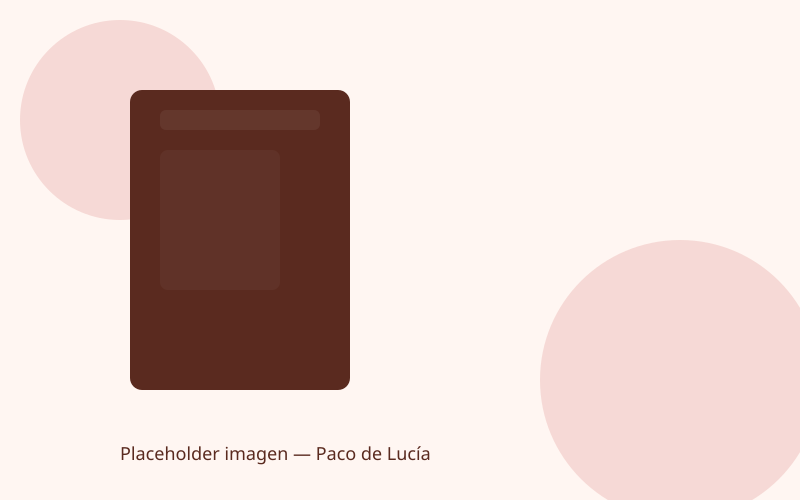
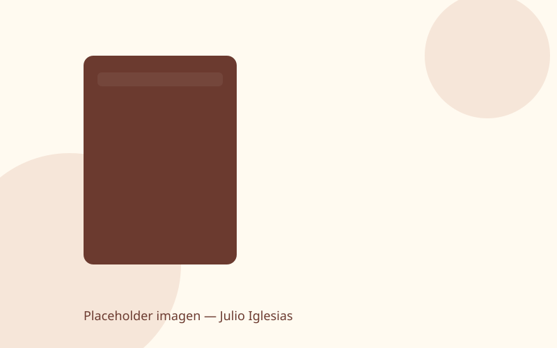
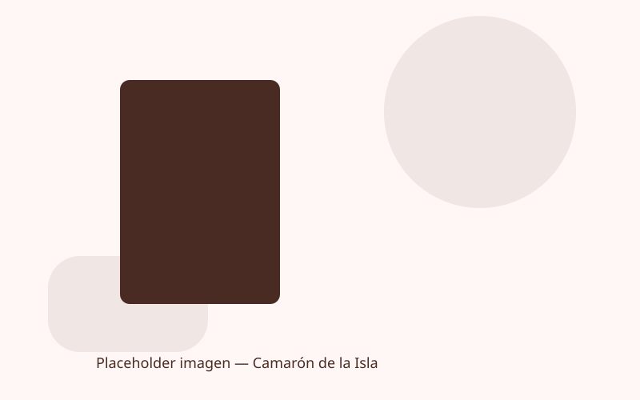
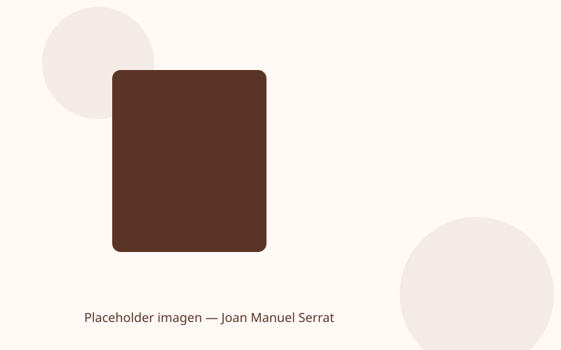
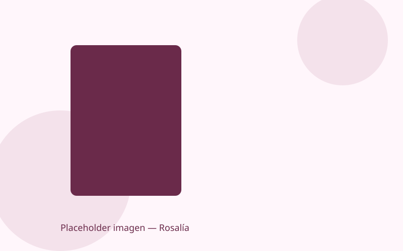

Paco de Lucía
Guitarrista flamenco
¿Tocaba instrumentos? Sí — guitarra flamenca
Instrumento característico: Guitarra flamenca
Canción más famosa: "Entre dos aguas"
Paco de Lucía (1947–2014) es considerado uno de los mejores guitarristas flamencos, innovador del género y colaborador de grandes artistas.

Julio Iglesias
Cantante internacional
¿Tocaba instrumentos? No, principalmente cantante
Instrumento característico: Voz
Canción más famosa: "La vida sigue igual"
Julio Iglesias es uno de los artistas españoles con mayor proyección internacional, conocido por su gran repertorio romántico.

Camarón de la Isla
Cantaor flamenco
¿Tocaba instrumentos? No, era vocalista
Instrumento característico: Voz
Canción más famosa: "La leyenda del tiempo"
Camarón (1950–1992) transformó el cante flamenco con un estilo único y colaboraciones icónicas.

Joan Manuel Serrat
Cantautor
¿Tocaba instrumentos? Sí — guitarra y composición
Instrumento característico: Guitarra
Canción más famosa: "Mediterráneo"
Serrat es uno de los cantautores más respetados en lengua española y catalana, con letras memorables y sensibilidad poética.

Rosalía
Artista pop / flamenco contemporáneo
¿Tocaba instrumentos? No como actividad principal
Instrumento característico: Voz
Canción más famosa: "Malamente"
Rosalía ha fusionado el flamenco con sonidos contemporáneos, ganando reconocimiento global desde sus primeros trabajos.